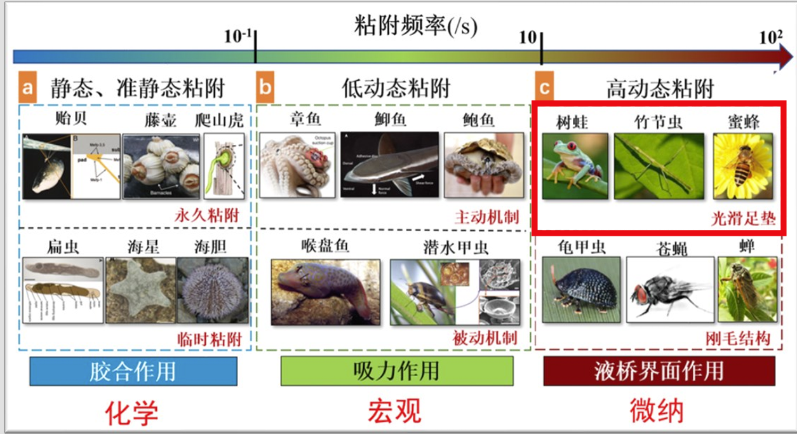
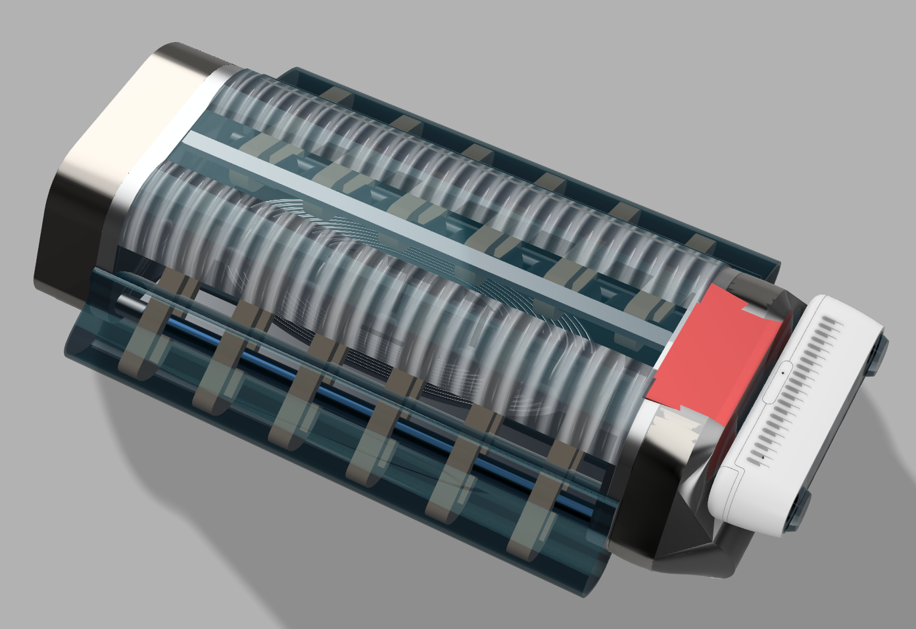
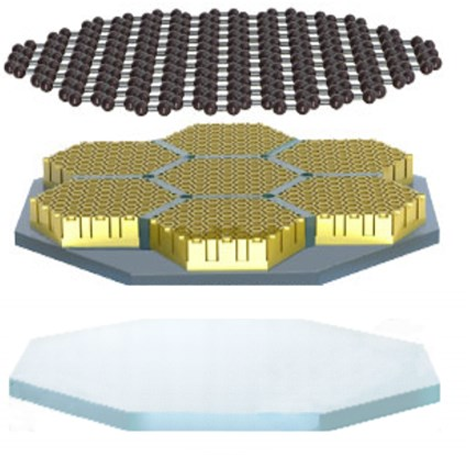

仿生应用湿黏附材料研发及其在医学领域的创新应用
于2024/05结项
湿黏附贴片在攀爬救援、医学等领域有着广泛的应用前景，而制作出高吸力，高动态的黏附贴片一直以来是生物学家和机械设计者在爬壁方面关注的焦点，但是目前仍存在较多关键技术问题亟待解决。湿黏附贴片的设计和应用方面仍存在很大缺陷。
Contact Me项目简介
Introduction
在机械工程创新创意赛中，赵杰亮老师发现了我的机械天赋，随后邀请我进入团队和博士生学长进行初步科研学习。于是我加入了湿粘附材料的项目组中，粘附材料主要可以分为3类：静态（藤壶），低动态（章鱼吸盘）和高动态（昆虫足部）。国创项目主要针对当前结构（树蛙+蜜蜂）进行优化，并寻找可以使用该湿粘附贴片的场景。
我的任务主要是针对第一代湿粘附贴片寻找应用场景。根据文献查找，我们首先调研了外部磁场驱动的软体条状机器人和目前应用于肠胃监测的胶囊机器人，但是这些机器人都无法针对病灶进行长期定点观测。因此，我们根据湿粘附贴片的特性设计了仿生乌贼机器人。该机器人使用曲柄摇块机构仿造乌贼的肉鳍运动。为了实现空间的压缩，我还设计了差相机构来减小机器人的体积。

在设计仿生乌贼机器人控制算法的时候，我们主要面临了两个问题：一是机器人的运动轨迹规划，二是机器人的通信问题。在运动轨迹规划方面，我结合跨越险阻竞赛的经历，使用了stanley控制器和PID来控制专项，frenet
optimal来实现局部路径规划（详情见github项目）。在通信方面，经过我们的调研，可以使用事件触发的方式来降低通信负担，这也为我未来的无人机研究打好了基础。
由于肠胃机器人体积较小,运算能力也较弱.于是通过阅读论文，我们发现可以应用事件触发+量化器进行优化,降低控制率计算频率。

除了仿生机器人，我还提出了基于湿粘附材料的心脏监测电极，通过将石墨烯覆盖于湿粘附贴片表面，形成导电层来读取心脏信号。但是遇到了工频干扰，基线漂移，和随机噪声等问题。为了解决这些问题，我提出了基于小波变换的心脏信号处理方法，通过小波变换将心脏信号分解成不同频率的信号，然后通过阈值滤波来去除噪声。同时对于运动造成的其他信号干扰等问题，使用MUSIC算法来进行信号分离。同时我还设计了自适应无源滤波器,专门用于处理肌电干扰产生的高频信号.